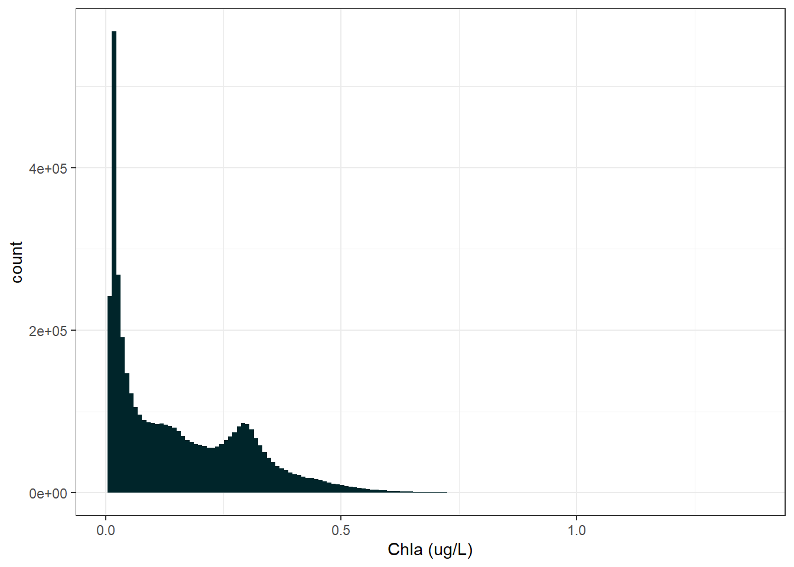
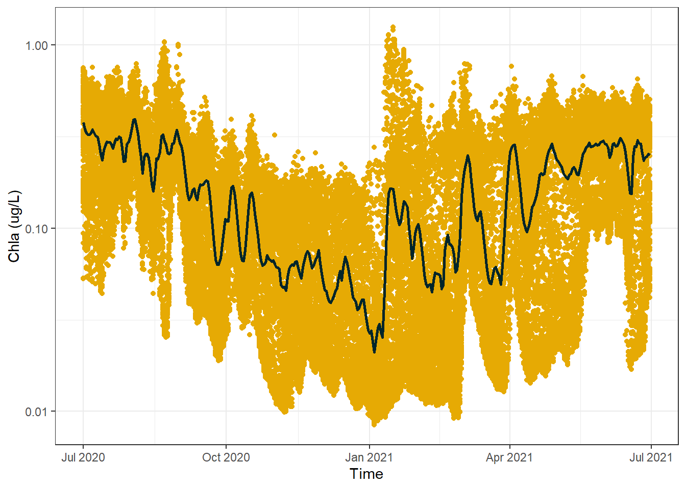
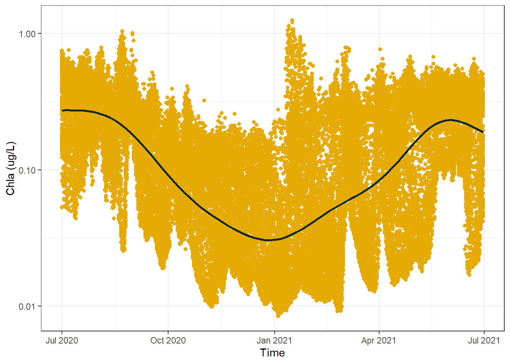

In this blog I demonstrate how you can make beautiful plots in R using example data extracted from the eReefs platform. You can also follow along with any of your own data.
1 Introduction
In this blog we are going to learn how to create some visually interesting plots in R. The package we are going to be using is ggplot2, and the data we are going to be using is from eReefs. If you are interested in getting an exact copy of the data I recommend you check out my other blog; The Extraction of Highly Specialised Modeled Data from eReefs, however you can still follow along just fine using your own data if it shares a similar format. Once you have completed this blog, I also highly recommend you check out my blog about Mapping eReefs Data, as this blog uses exactly the same dataset and explores its’ spatial aspects.
2 Data
The first thing we want to do is load in the example data that we are going to use for this blog. This data comes in a raster format, and was extracted from eReefs. There are few steps to loading it in proper - these are explained in more detail in my other blog.
Code
#load in the example dataexample_data <-read_stars("example_data.nc")#load vector of time valuestime_vals <-readRDS("time_vector.rds")#merge "attributes" (time) back togetherexample_data <-merge(example_data)#update time dimension values and namesexample_data <- example_data |>st_set_dimensions(3, time_vals,names =c("x", "y", "time"))#then update the attribute nameexample_data <-setNames(example_data, "Chla")
2.1 Converting to Tabular Format
Once we have the raster data we then need to convert it to a tabular format so it can be used by our ggplot2 functions. There is a very handy function for this called st_as_sf() from the stars package that converts stars objects into sf objects. Sf objects are essentially tables with an extra column for spatial information, we can then convert the sf object to a “normal” table by simply removing the column with the extra spatial information.
Note
Sf objects (from the sf package), and stars objects (from the stars package) are designed to work together as the packages were written by the same author. Thank god for that guy right!
The st_as_sf() function has a few key arguments;
x (this is the stars object)
as_points (should each raster cell become a polygon (F) or a point (T)) - I usually prefer polygons
merge (should cells with equal values be merged? Yes (T) or No (F)) - I usually say no, as this can mess with statistics based on cell count
long (should the table be wide or long) - ggplot loves long data, so I usually set this to TRUE
Code
#convert data to a simple feature objectsf_data <-st_as_sf(example_data, as_points = F, merge = F, long = T)#drop the geometry column from the datasf_data <- sf_data |>st_drop_geometry()
2.2 Exploring the Data
Okay, the data has been loaded in, and converted to tabular format. Let’s take a quick look at what we are dealing with. This data has 161 rows and 179 columns. The column names are time and Chla:
If we ordered this data by date we would see that there are several hundred rows of data that belong to the exact same date and time. This is because the original source of this data was a spatial file - it had a grid of values for each date and time:
Code
#order the first few rows by datehead(arrange(sf_data, time))
Please note that it is generally bad form to include spaces in your column names, but I am doing it to reduce the code needed for the plotting section. You will see I have to refer to the column name using ticks (``) to make the ggplot code work because of the space in the column name.
3 Plotting
Due to our cursory exploration of the data we already know a few things:
There is a lot of data
The data has a time element
There are multiple data points per time step
Values are the concentration of chlorophyll a, if you are not an environmental scientist this means the data is continuous, and should not contain negative values.
3.1 Distribution and Log Transformation
However what we don’t know is about the distribution of the data. Below is a histogram of our data.
Code
#create a basic histogram plot of the dataggplot(sf_data) +geom_histogram(aes(x =`Chla (ug/L)`), bins =150,fill ="#00252A") +theme_bw()

Clearly this data is heavily right skewed. Although we wont be doing any statistical analysis this distribution will still impact how our plot looks. So to make things a bit nice we will look at the data with a log 10 transformation:
Code
#create a histogram plot of the data on a log10 scaleggplot(sf_data) +geom_histogram(aes(x =`Chla (ug/L)`), bins =150,fill ="#8E3B46") +scale_x_log10() +theme_bw()
Yup, using a log10 scale will likely help us get a better visual representation of the data.
Now, knowing a bit more abut the distribution lets consider what kind of plot we want to make. Of course it is up to you, but I know that when I see a time variable and a whole bunch of continuous values, I am thinking lines and/or dot plots.
In its most basic form here is a dot plot:
Code
#creat a basic dot plot of the dataggplot(sf_data) +geom_point(aes(x = Time, y =`Chla (ug/L)`), color ="#E6AA04") +scale_y_log10() +theme_bw()
A few things to note:
As we have already covered, there is a shit ton of data and actually plotting all the points takes several minutes (boring).
It looks like there are some trends but it is a bit hard to tell, particularly because the number of points makes it difficult to identify areas of high, mid, or low density that might affect the trends
For the first point, a simple solution is to take a random subset of data to make plotting more efficient. For the second point, this will in part be fixed by the sub sampling, but we will also be adding extra visuals to this plot as we go along.
3.2 Subsetting Data
To do our sub-setting we will use the slice_sample() function. To ensure that we get the same number of randomly sampled points from each time step (day) we will make sure to first group our data by the Time column. In summary we want to randomly select 150 data points from each day - still quite a lot.
Code
#get a random subset of data, ensuring an equal sample is taken from each daysf_data_subset <- sf_data |>group_by(Time) |>slice_sample(n =150) |>ungroup()
Code
#creat a basic dot plot of the dataggplot(sf_data_subset) +geom_point(aes(x = Time, y =`Chla (ug/L)`), color ="#E6AA04") +scale_y_log10() +theme_bw()
Awesome, right away we can see that there appears to be a downtrend in concentration values around the middle of the time series before the values then increase again towards the end of the graph. It is easier to see this using this plot because we can see that there is a lower density of points in the middle of the plot near the top, where as even with the random sampling there is still a very high density of points in the middle of the plot near the bottom. It should be noted that it is theoretically possible the areas of high and low density are a product of the random sampling, but that is highly unlikely.
3.3 Additional Visuals
Something that will help us determine with greater precision how the data trends over time, would be a nice line that follows the daily mean. We will calculate this line using the full dataset to make 100% sure of the trend we spotted above.
Code
#calculate a daily mean valuesf_data_daily_mean <- sf_data |>group_by(Time) |>summarise(`Chla (ug/L)`=mean(`Chla (ug/L)`))#create a basic dot plot plus daily mean lineggplot() +geom_point(data = sf_data_subset, aes(x = Time, y =`Chla (ug/L)`), color ="#E6AA04") +geom_line(data = sf_data_daily_mean, aes(x = Time, y =`Chla (ug/L)`), color ="#00252A",lwd =1) +scale_y_log10() +theme_bw()

This line confirms that the values do indeed decrease towards the middle of the time series before increasing again towards the end of the graph, but the line is a bit ugly no? A common replacement in this scenario is to use a Generalized Additive Model (GAM) which creates a smoothing spline that also reveals trends but is not so harsh. Noting that the GAM makes use of the multiple samples per day to achieve the desired results:
Code
#create a basic dot plot plus GAM lineggplot() +geom_point(data = sf_data_subset, aes(x = Time, y =`Chla (ug/L)`), color ="#E6AA04") +geom_smooth(data = sf_data,aes(x = Time, y =`Chla (ug/L)`), method ="gam", formula = y ~s(x), color ="#00252A",se = F) +scale_y_log10() +theme_bw()

Something else of interest with time series data is how things are doing relative to a long-term mean. This long-term mean might be an annual mean, or a mean of all the available data going several years back, or a mean of some historical reference period. For us, we will just look at the annual mean:
Code
#calculate group mean to use for the yintercept line from the full datasetannual_mean <- sf_data |>summarise(`Mean Chla (ug/L)`=mean(`Chla (ug/L)`, na.rm = T)) |>as.numeric() |>round(4)#create a more sophisticated plotggplot() +geom_point(data = sf_data_subset, aes(x = Time, y =`Chla (ug/L)`), color ="#E6AA04") +geom_hline(yintercept = annual_mean,colour ="#628395",lwd =1.3) +geom_smooth(data = sf_data,aes(x = Time, y =`Chla (ug/L)`), method ="gam", formula = y ~s(x), color ="#00252A",se = F) +scale_y_log10() +theme_bw()
As expected, the smoothed GAM line fluctuates above and below the annual mean. You might initially think that the GAM line goes waaaay below the mean compared to how much it goes above the mean and that surely the mean isn’t correct, but remember this is all visualised with a log10 y axis.
The next thing I would like to add is some sort of visual cue to signify season. In the Townsville region (where we are currently looking at the data) there are only two season; “wet” and “dry”. This is loosely associated with summer and winter, with hundreds to thousands of millimeters of rain falling in summer and often less than one hundred millimeters falling across all of winter. The reason we care about rainfall is that it is one of the most significant drivers of chlorophyll a concentrations in the ocean. The rain on land brings lots of nutrients down the rivers and out onto the reef - nutrients which phytoplankton consume and then produce chlorophyll a (simplified explanation).The exact cut-off dates we will use for the wet season/dry season are March and October.
Code
#assign either the wet or dry season to each row of datasf_data_subset <- sf_data_subset |>mutate(Season =case_when(month(Time) >4&month(Time) <11~"Dry", T ~"Wet"))#create a more sophisticated plotggplot() +geom_point(data = sf_data_subset, aes(x = Time, y =`Chla (ug/L)`, color = Season)) +geom_hline(yintercept = annual_mean,colour ="#628395",lwd =1.3) +scale_color_manual(values =c("#E6AA04", "#8E3B46")) +geom_smooth(data = sf_data,aes(x = Time, y =`Chla (ug/L)`), method ="gam", formula = y ~s(x), color ="#00252A",se = F) +scale_y_log10() +theme_bw()
It is interesting to see that there is a clear relationship visible between season and chlorophyll a concentration. This graph suggests there is a sort of “recharge” and “use” cycle occurring. Where chlorophyll a reach a maximum concentration right after the end of the wet season, before being “used up” over the dry season and requiring a “recharge” by the following wet season.
There is only one more thing I would like to add to this plot, and it is mainly due to personal preference. I would like to overlay a violin plot to further highlight the distribution of the data we are dealing with. Specifically, it will highlight any regions of the plot in which large amounts of data are concentrated, as well as any spots that are particularly skewed.
Code
#mutate the date column back into an actual date variablesf_data_subset <- sf_data_subset |>mutate(Time =as.Date(Time))#do the same for the full datasetsf_data <- sf_data |>mutate(Time =as.Date(Time))#create a more sophisticated plotggplot() +geom_point(data = sf_data_subset, aes(x = Time, y =`Chla (ug/L)`, color = Season)) +geom_hline(yintercept = annual_mean,colour ="#628395",lwd =1.3) +scale_color_manual(values =c("#E6AA04", "#8E3B46")) +geom_smooth(data = sf_data,aes(x = Time, y =`Chla (ug/L)`), method ="gam", formula = y ~s(x), color ="#00252A",se = F) +geom_violin(data = sf_data_subset,aes(x = Time, y =`Chla (ug/L)`),alpha =0.4, color ="Black") +scale_y_log10() +scale_x_date(breaks =pretty_breaks(6)) +labs(x ="Time", y ="Chla (ug/L) (Log10 Scale)") +theme_bw()
And there you have it, a fairly nice looking singular dot plot. It contains a heck of a lot of information without being too crowed (in my opinion). Some extensions you could play around with for this plot could be downloading several years of data and faceting by year, comparing different water quality indicators, or even comparing different locations around the reefs.
4 Caveats
You may find that the visuals in these plots are not for you, that’s okay! Just because I say they look good doesn’t mean you have to think that. Play around with colours, do a deep dive on ggplot2 options, experiment with your own ideas and find a style that works for you. There are also plenty of guide around design rules if you are particularly interested, such as this one by Tableau.
Thanks For Reading!
If you like the content, please consider donating to let me know. Also please stick around and have a read of several of my other posts. You'll find work on everything from simple data management and organisation skills, all the way to writing custom functions, tackling complex environmental problems, and my journey when learning new environmental data analyst skills.